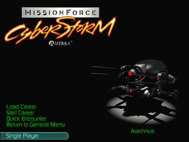

Bioderms are similar to clones. The DNA sample they are cloned from is incorporated into a protoplasm to form a base genetic matrix (BGM). The DNA samples come from former human heroes. In the Bioderm Facility, you may preview a catalogue of BGMs to create a Bioderm.
Protoplasm is used because it grows faster than a “conventional” clone and it maximizes the potential of the DNA. Protoplasm is unstable, however, and one of the major ratings a Bioderm has is its Genetic Stability. Stress and overuse of StimGland cause the Bioderm to lose cohesion, making it degenerate into the veiny blue protoplasm from which it was created. Protoplasm also has the interesting side effect of magnifying the electromagnetic field inherent in living beings. Polarizing this field reestablishes Genetic Stability. Certain Bioderms are created with Command potential, which enhances their own electromagnetic field exponentially. It also allows them to stabilize an unstable Bioderm by moving near it (within three Hexes).
Bioderms have limited life spans, giving them insufficient time to develop their skills through conventional training. Virtual Reality Training became the perfect solution. Bioderms are given Genetic Computer Strand Implants during their initial creation. These DNA Supercomputers benefit the Bioderm in two ways: they retrieve the genetic memories of those skills practiced by the initial BGM donor, and they act as receptors for bioelectric sequence coding to further enhance skills. Bioelectric sequences for specific skills were recorded from the original Herc Pilots during the last Great War, and the best of these became the skill enhancement program codes. Bioelectric sequence coding is combined with a cerebral-direct imaging device to imprint the Bioderm as quickly as possible with additional skill training. While efficient, VR Training is unable to completely maximize a Bioderm’s skill potential. Among themselves, Bioderms refer to this process as ‘getting the chair.’
More detailed descriptions of each Bioderm are located under Bioderm Biographies.